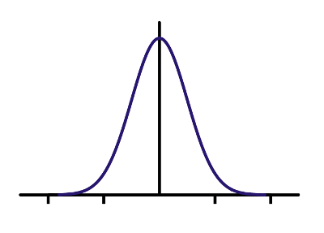
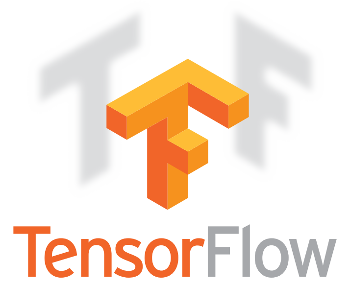

Computer Vision Using Go and OpenCV 3
Ron Evans - @deadprogram
Welcome
Ron Evans (@deadprogram)
Ringleader
@hybrid_group
hybridgroup.com
Clients
Open Source Projects
gobot.io

gocv.io
opencv.org
golang.org
Intel Computer Vision SDK
What is computer vision?
Computer vision can...
Detect motion
Recognize people
Telepresence
Autonomous Vehicles
Augmented Humans
Why you should use Go
for computer vision
Concurrency
Portability
Performance
How GoCV Works
Go → CGo → C → C++
Linux
mac os
Windows
Yes, I said Windows
The "Hello, world" of video
package main
import (
"gocv.io/x/gocv"
)
func main() {
webcam, _ := gocv.VideoCaptureDevice(0)
window := gocv.NewWindow("Hello")
img := gocv.NewMat()
for {
webcam.Read(img)
window.IMShow(img)
gocv.WaitKey(1)
}
}
Demo
Into The Mat(rix)
Mat (2 dimensions, 3 channels)
Image courtesy of opencv.jp/cookbook
Mat (2 dimensions, 1 channel)
Image courtesy of opencv.jp/cookbook
Mat (3 dimensions, 4 channels)
Image courtesy of opencv.jp/cookbook
4 Applications Using GoCV
Face tracking
Face tracking
Face blurring

Cascade classifier
gocv.CascadeClassifier{}
package main
import (
"fmt"
"image"
"os"
"strconv"
"gocv.io/x/gocv"
)
func main() {
if len(os.Args) < 3 {
fmt.Println("How to run:\n\tfaceblur [camera ID] [classifier XML file]")
return
}
// parse args
deviceID, _ := strconv.Atoi(os.Args[1])
xmlFile := os.Args[2]
// open webcam
webcam, err := gocv.VideoCaptureDevice(deviceID)
if err != nil {
fmt.Printf("error opening video capture device: %v\n", deviceID)
return
}
defer webcam.Close()
// open display window
window := gocv.NewWindow("Face Blur")
defer window.Close()
// prepare image matrix
img := gocv.NewMat()
defer img.Close()
// load classifier to recognize faces
classifier := gocv.NewCascadeClassifier()
defer classifier.Close()
classifier.Load(xmlFile)
fmt.Printf("start reading camera device: %v\n", deviceID)
for {
if ok := webcam.Read(img); !ok {
fmt.Printf("cannot read device %d\n", deviceID)
return
}
if img.Empty() {
continue
}
// detect faces
rects := classifier.DetectMultiScale(img)
fmt.Printf("found %d faces\n", len(rects))
// blur each face on the original image
for _, r := range rects {
imgFace := img.Region(r)
// blur face
gocv.GaussianBlur(imgFace, imgFace, image.Pt(75, 75), 0, 0, gocv.BorderDefault)
imgFace.Close()
}
// show the image in the window, and wait 1 millisecond
window.IMShow(img)
if window.WaitKey(1) >= 0 {
break
}
}
}
Demo
Motion Detection/Tracking
Background Subtraction
Mixture Of Gaussian (MOG)

Gaussian
Mixture Of Gaussian
CC BY-SA 3.0, https://commons.wikimedia.org/w/index.php?curid=84811
Running Mixture Of Gaussian
CC BY-SA 3.0, https://commons.wikimedia.org/wiki/File:Running_gaussian.jpg
gocv.BackgroundSubtractorMOG2{}
package main
import (
"fmt"
"image"
"image/color"
"os"
"strconv"
"gocv.io/x/gocv"
)
const MinimumArea = 3000
func main() {
if len(os.Args) < 2 {
fmt.Println("How to run:\n\tmotion-detect [camera ID]")
return
}
// parse args
deviceID, _ := strconv.Atoi(os.Args[1])
webcam, err := gocv.VideoCaptureDevice(deviceID)
if err != nil {
fmt.Printf("Error opening video capture device: %v\n", deviceID)
return
}
defer webcam.Close()
window := gocv.NewWindow("Motion Window")
defer window.Close()
img := gocv.NewMat()
defer img.Close()
imgDelta := gocv.NewMat()
defer imgDelta.Close()
imgThresh := gocv.NewMat()
defer imgThresh.Close()
mog2 := gocv.NewBackgroundSubtractorMOG2()
defer mog2.Close()
status := "Ready"
fmt.Printf("Start reading camera device: %v\n", deviceID)
for {
if ok := webcam.Read(img); !ok {
fmt.Printf("Error cannot read device %d\n", deviceID)
return
}
if img.Empty() {
continue
}
status = "Ready"
statusColor := color.RGBA{0, 255, 0, 0}
// first phase of cleaning up image, obtain foreground only
mog2.Apply(img, imgDelta)
// remaining cleanup of the image to use for finding contours
gocv.Threshold(imgDelta, imgThresh, 25, 255, gocv.ThresholdBinary)
kernel := gocv.GetStructuringElement(gocv.MorphRect, image.Pt(3, 3))
gocv.Dilate(imgThresh, imgThresh, kernel)
contours := gocv.FindContours(imgThresh, gocv.RetrievalExternal, gocv.ChainApproxSimple)
for _, c := range contours {
area := gocv.ContourArea(c)
if area < MinimumArea {
continue
}
status = "Motion detected"
statusColor = color.RGBA{255, 0, 0, 0}
rect := gocv.BoundingRect(c)
gocv.Rectangle(img, rect, color.RGBA{255, 0, 0, 0}, 2)
}
gocv.PutText(img, status, image.Pt(10, 20), gocv.FontHersheyPlain, 1.2, statusColor, 2)
window.IMShow(img)
gocv.WaitKey(1)
}
}
Demo
MJPEG Streaming
package main
import (
"fmt"
"log"
"net/http"
"os"
"strconv"
"github.com/hybridgroup/mjpeg"
"gocv.io/x/gocv"
)
var (
deviceID int
err error
webcam *gocv.VideoCapture
stream *mjpeg.Stream
)
func main() {
if len(os.Args) < 3 {
fmt.Println("How to run:\n\tmjpeg-streamer [camera ID] [host:port]")
return
}
// parse args
deviceID, _ = strconv.Atoi(os.Args[1])
host := os.Args[2]
// open webcam
webcam, err = gocv.VideoCaptureDevice(deviceID)
if err != nil {
fmt.Printf("error opening video capture device: %v\n", deviceID)
return
}
defer webcam.Close()
// create the mjpeg stream
stream = mjpeg.NewStream()
// start capturing
go capture()
fmt.Println("Capturing. Point your browser to " + host)
// start http server
http.Handle("/", stream)
log.Fatal(http.ListenAndServe(host, nil))
}
func capture() {
img := gocv.NewMat()
defer img.Close()
for {
if ok := webcam.Read(img); !ok {
fmt.Printf("cannot read device %d\n", deviceID)
return
}
if img.Empty() {
continue
}
buf, _ := gocv.IMEncode(".jpg", img)
stream.UpdateJPEG(buf)
}
}
Demo
Tensordrone
Tensorflow enabled Drone

tensorflow.org
gobot.io

Deep Neural Network
CC BY-SA 3.0, https://commons.wikimedia.org/w/index.php?curid=1496812

Inception v3 Architecture
gocv.Net{}
package main
import (
"bufio"
"fmt"
"image"
"image/color"
"os"
"strconv"
"sync/atomic"
"time"
"gobot.io/x/gobot"
"gobot.io/x/gobot/platforms/ble"
"gobot.io/x/gobot/platforms/joystick"
"gobot.io/x/gobot/platforms/opencv"
"gobot.io/x/gobot/platforms/parrot/minidrone"
"gocv.io/x/gocv"
)
type pair struct {
x float64
y float64
}
var leftX, leftY, rightX, rightY atomic.Value
const offset = 32767.0
func main() {
// parse args
if len(os.Args) < 6 {
fmt.Println("How to run:\n\ttensordrone [drone ID] [joystick JSON file] [cameraid] [modelfile] [descriptionsfile]")
return
}
droneID := os.Args[1]
joystickFile := os.Args[2]
deviceID, _ := strconv.Atoi(os.Args[3])
model := os.Args[4]
descriptions, _ := readDescriptions(os.Args[5])
joystickAdaptor := joystick.NewAdaptor()
stick := joystick.NewDriver(joystickAdaptor, joystickFile)
droneAdaptor := ble.NewClientAdaptor(droneID)
drone := minidrone.NewDriver(droneAdaptor)
window := opencv.NewWindowDriver()
camera := opencv.NewCameraDriver(deviceID)
// open Tensorflow DNN classifier
net := gocv.ReadNetFromTensorflow(model)
defer net.Close()
work := func() {
leftX.Store(float64(0.0))
leftY.Store(float64(0.0))
rightX.Store(float64(0.0))
rightY.Store(float64(0.0))
camera.On(opencv.Frame, func(data interface{}) {
img := data.(gocv.Mat)
// convert image Mat to 224x244 blob that the classifier can analyze
blob := gocv.BlobFromImage(img, 1.0, image.Pt(224, 244), gocv.NewScalar(0, 0, 0, 0), true, false)
// feed the blob into the Tensorflow classifier network
net.SetInput(blob, "input")
// run a forward pass thru the network
prob := net.Forward("softmax2")
// reshape the results into a 1x1000 matrix
probMat := prob.Reshape(1, 1)
// determine the most probable classification, which will be max value
_, maxVal, _, maxLoc := gocv.MinMaxLoc(probMat)
// display classification based on position in the descriptions file
desc := "Unknown"
if maxLoc.X < 1000 {
desc = descriptions[maxLoc.X]
}
status := fmt.Sprintf("description: %v, maxVal: %v\n", desc, maxVal)
gocv.PutText(img, status, image.Pt(10, 20), gocv.FontHersheyPlain, 1.2, color.RGBA{0, 255, 0, 0}, 2)
blob.Close()
prob.Close()
probMat.Close()
window.ShowImage(img)
window.WaitKey(1)
})
stick.On(joystick.SquarePress, func(data interface{}) {
drone.Stop()
})
stick.On(joystick.TrianglePress, func(data interface{}) {
drone.HullProtection(true)
drone.TakeOff()
})
stick.On(joystick.XPress, func(data interface{}) {
drone.Land()
})
stick.On(joystick.LeftX, func(data interface{}) {
val := float64(data.(int16))
leftX.Store(val)
})
stick.On(joystick.LeftY, func(data interface{}) {
val := float64(data.(int16))
leftY.Store(val)
})
stick.On(joystick.RightX, func(data interface{}) {
val := float64(data.(int16))
rightX.Store(val)
})
stick.On(joystick.RightY, func(data interface{}) {
val := float64(data.(int16))
rightY.Store(val)
})
gobot.Every(10*time.Millisecond, func() {
rightStick := getRightStick()
switch {
case rightStick.y < -10:
drone.Forward(minidrone.ValidatePitch(rightStick.y, offset))
case rightStick.y > 10:
drone.Backward(minidrone.ValidatePitch(rightStick.y, offset))
default:
drone.Forward(0)
}
switch {
case rightStick.x > 10:
drone.Right(minidrone.ValidatePitch(rightStick.x, offset))
case rightStick.x < -10:
drone.Left(minidrone.ValidatePitch(rightStick.x, offset))
default:
drone.Right(0)
}
})
gobot.Every(10*time.Millisecond, func() {
leftStick := getLeftStick()
switch {
case leftStick.y < -10:
drone.Up(minidrone.ValidatePitch(leftStick.y, offset))
case leftStick.y > 10:
drone.Down(minidrone.ValidatePitch(leftStick.y, offset))
default:
drone.Up(0)
}
switch {
case leftStick.x > 20:
drone.Clockwise(minidrone.ValidatePitch(leftStick.x, offset))
case leftStick.x < -20:
drone.CounterClockwise(minidrone.ValidatePitch(leftStick.x, offset))
default:
drone.Clockwise(0)
}
})
}
robot := gobot.NewRobot("tensordrone",
[]gobot.Connection{joystickAdaptor, droneAdaptor},
[]gobot.Device{stick, drone, window, camera},
work,
)
robot.Start()
}
func getLeftStick() pair {
s := pair{x: 0, y: 0}
s.x = leftX.Load().(float64)
s.y = leftY.Load().(float64)
return s
}
func getRightStick() pair {
s := pair{x: 0, y: 0}
s.x = rightX.Load().(float64)
s.y = rightY.Load().(float64)
return s
}
// readDescriptions reads the descriptions from a file
// and returns a slice of its lines.
func readDescriptions(path string) ([]string, error) {
file, err := os.Open(path)
if err != nil {
return nil, err
}
defer file.Close()
var lines []string
scanner := bufio.NewScanner(file)
for scanner.Scan() {
lines = append(lines, scanner.Text())
}
return lines, scanner.Err()
}
Demo